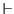
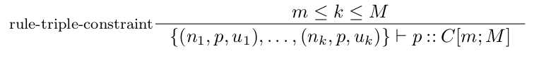
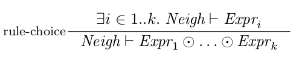

evaluation
Declarative semantics of simple shape expression schemas
Recall that a triple constraint is either a shape constraint (ShapeConstraint), or a value constraint (ValueConstraint). Remark also that every value constraint, no matter its kind (value set, or literal data type, or node type), defines a set of values; we call them the allowed values of the constraint. For instance, the allowed values of the literal data type constraint int are all the literal integer values; the allowed values of the non-literal value constraint are all IRI and all blank nodes.
- a::C is a value constraint, and p = a, and u belongs to the set of allowed values for C, or
- a::C is a shape constraint, u in an IRI, and p = a.
- Expr is the empty shape empty and Neigh is the empty set, or
- Expr is a triple constraint a::C[m;M] (where m and M are the minimal and the maximal cardinality, respectively), every triple in Neigh matches a::C, and the number of elements of Neigh is in the bounds given by [m;M];
- Expr is a disjunctive shape, let Expr = Expr 1 Expr 2 ... Expr k, and Neigh satisfies Expr 1, or Neigh satisfies Expr 2, ... or Neigh satisfies Expr k;
- Expr is a grouping, let
Expr = Expr
1, ... , Expr k, and Neigh can be split into k disjoint sets of triples
Neigh = Neigh 1
 ... Neigh k s.t.
Neigh i satisfies Expr i for all i in 1..k.
... Neigh k s.t.
Neigh i satisfies Expr i for all i in 1..k.
Note that for disjunctive shapes, satisfying one or the other of the Expr i is not exclusive (similarly to logical disjunction).
The above definition can be written using the following set of inference rules. We denote Neigh  Expr the fact that Neigh satisfies Expr.




If a set of triples Neigh satisfies a shape expression Expr, then one can construct (at least one) proof tree which root is Neigh Expr, using the above induction rules. Given such proof tree, it can be shown that every triple (n, p, u) in Neigh appears in the conclusion of exactly one application of rule-empty. For every triple (n, p, u) in Neigh, let wm((n, p, u)) be the triple constraint p::C that appears in the conclusion of the same rule application as (n, p, u). We call wm a witness mapping (for the fact that Neigh satisfies Expr). Note that every proof tree defines a unique witness mapping.
For an RDF graph G and a node n in G, the out-going neighbourhood of n in G is the set of triples (n, p, u) that belong to the graph G. This set is denoted out(G,n). For a shape expression Expr, denote properties(Expr) the set of properties that appear in some triple constraint in Expr. For a schema S and a shape label T that appears in S, denote expr(T, S) the shape expression that defines the shape T in the schema S, and denote incl(T, S) the set of included properties associated with the definition of the shape T in S. Note that if T is a closed shape, then incl(T, S) is empty.
For a shape expression schema S and a graph G, a typing t is called valid typing of G by S if for every node n in G and every shape label T in t(n), there exist three mutually disjoint sets Matched, OpenProp, Rest such that
- out(G,n) = Matched
OpenProp Rest, and
- Rest = {(n, p, u)
out(G,n) p
 properties(expr(T,
S))}, and
properties(expr(T,
S))}, and - Matched = {(n, p, u) out(G,n) (n, p, u) matches a::C for some triple constraint a::C that appears in expr(T, S)}, and
- there exists a proof tree with corresponding witness mapping wm for the fact that Matched satisfies expr(T, S) s.t., for all shape triple constraint a::C that occurs in expr(T, S), and for all triple (n, p, u) with wm((n, p, u)) = a::C, we have C t(u), and
- for all triple (n, p, u) in OpenProp, we have p incl(T, S), and
- if T is a closed shape, then Rest = .
In the above definition, intuitively,
- out(G, n) can be decomposed in three disjoint sets Matched, OpenProp, Rest s.t.
- Rest contains exactly the triples which property is not mentioned in expr(T, S), and
- Matched contains exactly the triples that match some of the triple constraints that appear in expr(T, S). Moreover
- Matched needs to satisfy expr(T, S), and to propagate the shape constraints: whenever a triple (n, p, u) is a witness for the shape constraint a::C, the required shape C is indeed associated to its object node u by the valid typing t. Additionally,
- the triples which properties appear in expr(T, S), but did not match any of the triple constraints from expr(T, S), must have their property among the allowed extra properties. Finally,
- for closed shapes, non extra triples than those used for satisfying expr(T, S) are allowed. Remark that, for closed shapes, incl(T, S) is empty, therefore OpenProp is also empty.
Complex shape constraints
In the previous sections we considered that a shape constraint is simply a shape label, indicating the required shape for a node. In what follows, we introduce more complex shape constraints as conjunctions and disjunctions of required shapes, as defined by the following abstract syntax.
ShapeConstraint::= DisjShapeConstraint ConjShapeConstraint
DisjShapeConstraint::= ShapeLabel (or
ShapeLabel)*
ConjShapeConstraint::= ShapeLabel (and
ShapeLabel)*
Extending the semantics to this new construct requires only a slight modification of valid typing, namely the condition 1. from Definition 3 is to be replaced by the following.
- there exists a
proof tree with corresponding witness mapping wm for the fact that Matched satisfies expr(T, S) s.t., for all shape triple constraint
a::C that occurs in expr(T, S), and for all triple (n, p, u) with wm((n, p,
u)) = a::C, we have
- if a::C is a disjunctive shape constraint, say C = T1 or ...or Tk, then Ti belongs to t(u) for some Ti among T1, ...Tk, and
- if a::C is a conjunctive shape
constraint, say C = T1 and ...and Tk,
then {T1, ..., Tk}
 t(u), that is,
all the required types belong to t(u).
t(u), that is,
all the required types belong to t(u).
Adding a one-of constraint
Syntax
We add the one-of operator to the abstract syntax by the following.
ShapeExpr::= EmptyShape
(TripleConstraint InverseTripleConstraint) Cardinality
DisjunctiveShape
GroupShape
OneOfShape
OneOfShape::= ShapeExpr ('' ShapeExpr)*
We impose a syntactic restriction to the use of the one-of operator, which is that all types that appear in the sub-expressions of OneOfShape are non recursive. Formally, for a schema S, the shapes dependency graph of S is the directed graph which nodes are the shape labels that occur in S, and that has an edge from T1 to T2 iff the shape name T2 appears in the shape definition for T1 in S (that is, there is a triple shape constraint a::C in expr(T1, S) s.t. T2 is one of the types in C). We denote depgraph(S) the dependency graph of S. Moreover, for a shape label T in S, let depgraph(S, T) be the sub-graph of depgraph(S) induced by the set of nodes T2 that are reachable from T in depgraph(S); here by reachable we mean standard reachability in graphs.
Given a schema S and a shape label T in S, we say that T is recursion free in S iff depgraph(S, T) is a directed acyclic graph.
We now impose the following syntactic restriction on schemas S using the one-of operator.
For all one-of sub-expression Expr 1 ... Expr k that appears in some shape definition in S, and for all shape label T that appears in some of the Expr 1, ..., Expr k, the type T is recursion free in S.Schemas that do not satisfy this syntactic restriction are considered invalid schemas. Remark also that it can be tested in linear time in the size of the representation of the schema whether a schema enjoys this syntactic restriction.
Semantics
For defining the semantics of the one-of operator, we amend Definition 2 and Definition 4 in the following way.
- Expr is a one-of shape, let Expr = Expr 4 Expr 2 ... Expr k, and Neigh satisfies Expr 1, or Neigh satisfies Expr 2, ... or Neigh satisfies Expr k;

We now introduce a notation. Consider a schema S and a proof tree for some Neigh Expr, where
Neigh is a set of triples and
Expr is a shape definition in
S. Given a node r in that proof tree that corresponds to an
application of rule-choice, let Expr ri
be the choice sub-expression used in the proof in node r (that is, node r has
the shape of rule-choice above, and Expr ri is the Expr i
in the premise of r in the proof tree).
We denote Sri the schema obtained from
S by removing the sub-expression
Expr ri from S.
- there exists a
proof tree with corresponding witness mapping wmfor the fact that Matched satisfies expr(T, S) s.t., for all shape triple
constraint a::C that
occurs in expr(T, S), and for all
triple (n,
p, u) with
wm((n, p,
u))=
a::C, we
have
- if a::C is a disjunctive shape constraint, say C = T1 or ...or Tk, then Ti belongs to t(u) for some Ti among T1, ...Tk, and
- if a::C
is a conjunctive shape constraint,
say C = T1
and ...and
Tk, then {T1, ..., Tk}
t(u),
that is, all the required types belong to t(u),
and moreover - for all node r of the proof tree that correspons to an application of rule-choice, there does not exist a valid typing of G by Sri.
This apparently very strong requirement is easy to check. Indeed, even though the definition requires for all valid typings to agree, we do not need to check all the valid typings. Because of the non recursiveness restriction for schemas, it is sufficient to check a small number of possible typings and conclude whether the property holds for all valid typings.